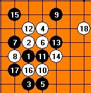

关于棋谱的记忆
#1 关于棋谱的记忆 作者：有志青年 发表时间：2009-2-3 7:15:11
原文地址：http://www.rifchina.com/Article/ShowArticle.asp?ArticleID=5249
在加入西部连珠后不久，我接到了一个电话。这个电话最后改变了我的一生。
那是一个星期五的下午，我正要出去上课，忽然寝室里的电话响了，我看了下来电显示，是个没见过的号码，便接了起来，那边传来一个浑厚的男音：喂，你好，请帮我找一下梅凡。
我愣了一下，说我就是梅凡，你是哪位？
哦，你好，我是胡立则。
胡立则？我忽然想起，不是楚天英杰（现在湖北连珠的前身）的那个老大吗？为什么会找我呢？顿时又惊又喜，一下不知道说什么好了。
他说是这样的，我上回在网上看过你下棋了，觉的你下得还蛮好，刚好我们马上五一期间有个活动，看你有没兴趣来参加。
好啊，我当时觉的很激动，平时在网上下棋，面对的都是看不见的对手，不知对手长什么样，也不知道是不是用软件。如今终于有机会在现实里面对面的下棋了，而且还可以见到几位传说中的高手，何乐而不为呢，于是我很快就答应了，还说我有个朋友也很厉害，想带他一起来。
胡老师说好啊，你朋友叫什么名字。
我说他也经常在网上下，叫高飞，他一听哈哈大笑了两声，说你还不知道啊，你的电话就是他告诉我的。
我一听晕了，偶真笨啊-_-，下棋的朋友里面那会儿也就高飞知道我电话了。哎闹了个笑话，不过他是怎么和我跟高飞认识的呢，这事还要从我的第一次网上比赛说起。
那是我刚加入西部不久，社里便准备了一次友谊赛，联系的对手是楚天英杰。我以前在棋室里就见过这社的ID，看名字就感觉有些亲切，后来仔细一问，果然都是老乡。当时楚天英杰也小有名气，跟西部的管理一拍即合，决定弄一场10V10的友谊赛。当时西部里高手云集，有傲天傲地傲人三兄弟、流逝、鬼手等，还有好多名字都忘了……反正一直排到20以后，还是没有我的名字，于是就顺理成章的坐板凳去了。
当然我也觉的无所谓，反正还可以学学高手下棋，于是在棋室里出出进进，碰见感兴趣的棋局就留下来看几步，没兴趣的就一闪而过，下不了棋也可以混个脸熟嘛。过了一会，星魂跑过来找我，说兄弟你别乱跑了，我找个人跟你下棋。
我说行啊，和谁下呢？
星魂说就是坐12号那个，他也是来晚了没比上的，刚好你跟他交流一下吧，不算成绩的。
我一看，那人叫楚天英杰汤包，倒是以前从来没见到过，不过从胜率看很吓人，85%，但我想既然大家都是替补，强也强不到哪去吧？他开了瑞星开局，那个时候，这个开局并没有现在这么流行，他下出了这样一个团角的12（图1），让我觉的很麻烦。我从没下过这个12，只是凭感觉一一应对着。 十几手之后，我才发现对手棋力的强大，每一手都下的咄咄逼人，一不小心只怕就要输掉。假如不是那天我状态特别好，恐怕早就败下阵来。我记得那一盘下的特别久，最后连正式的比赛结束了，我们这桌还在继续下，以致很多人都过来围观，在里面指指点点。本来时间就不多，这下搞的我特别紧张。结果到最后读秒阶段，看热闹的人终于看到了他们喜闻乐见的事，我一个冲四没挡，挂了……。搞的我郁闷的很，不过汤包倒是说我下的不错，下的点挺有新意的。我说惭愧只是运气而已，我是武汉的，以后有时间多请教。

汤包说是吗，我也是武汉的啊，住汉口这边（武汉分为武昌、汉口、汉阳三个区），我说我在武昌……于是两人就这么你一言我一句的聊了起来，他说楚天英杰里好多都是武汉的，在现实里还有棋社，有职业段位棋手，建议我加进去。
现实棋社？段位？说实话，那个时候这些词对我来说还是很遥远的，我只不过是个在网上下棋的爱好者而已，我还有自己的学业，还有其他的爱好，我不是个狂热的追星族，也不是个无聊的小混混，但在我的内心深处始终涌动着这样一种信念，它让我热血沸腾，并缓缓不停地溶入到我的生命之中，让我有信心继续下去。因而在接到胡立则老师的那个电话时，我几乎没有任何犹豫就答应了。不为别的，只因为我的执着。
行动的时间最后定到了5月4号。记得那天我起了一大早，兴致冲冲地就跑到了体育馆。可进去一瞧，傻了。通知上说的活动地点是在体育馆三楼，但我围着二楼遛了一圈，硬是没找着上三楼的楼梯。我一下急了，难道地方记错了？那时还没买手机，只能跑到楼下找个公用电话打了过去。
那边胡老师接了电话，他说没错，你只管上来，我说怎么
#2 Re:关于棋谱的记忆 作者：隐藏菜系 发表时间：2009-2-3 13:44:58
偶像哇~
#3 Re:关于棋谱的记忆 作者：超级菜鸟徒弟 发表时间：2009-2-21 13:08:04
高手这么多，要学的更多。看您的故事是对我的激励，谢谢！#4 Re:关于棋谱的记忆 作者：浪人痴痴 发表时间：2009-2-28 17:08:06
继续挺！~
#5 Re:关于棋谱的记忆 作者：团子 发表时间：2009-3-4 4:32:07
更新的太慢了~~米兰加油啊